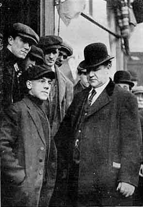

The General Strike
Born in Salt Lake City, Bill Haywood (1869-1928) went to work in the mines at the age of nine. He joined the Western Federation of Miners in 1896 and was active as an executive board member and as secretary-treasurer of that organization until 1907. One of the founders and the best known of the I.W.W. leaders, he became its secretary-treasurer for 1916-18. In September 1917 he was arrested and convicted under the Federal Espionage Act. In 1920, while out of Leavenworth Penitentiary on bail, he fled to the Soviet Union where, for a time, he was a leader of the American Kuzbas Colony in Siberia. He died in Moscow in 1928 after writing his memoirs, which he titled Against the Current. They were published as Bill Haywood's Book by International Publishers (New York, 1929).
Haywood wrote several pamphlets and numerous articles. He was one of the I.W.W.'s most famous lecturers. In World of Labour (London, 1913), G. D. H. Cole said: "Haywood could make himself understood by a crowd that did not know a word he said, merely by waving his arms and shouting." On Haywood's death, an obituary in The Nation (May 30, 1928) called him "as American as Bret Harte or Mark Twain."
Haywood's pamphlet The General Strike (Chicago, n.d.), published by the I.W.W., was a summary of a speech he gave in New York City on March 16, 1911.
Introductory material scanned from Rebel Voices, edited by Joyce L. Kornbluth, (1998), Charles H. Kerr Publishing Company, 1740 West Greenleaf Avenue, Chicago, IL 60626. THE GENERAL STRIKE
 I came to-night to speak to you on the general strike. And this night, of all the nights in the year, is a fitting time. Forty years ago to-day there began the greatest general strike known in modern history, the French Commune; a strike that required the political powers of two nations to subdue, namely, that of France and the iron hand of a Bismarck government of Germany.
That the workers would have won that strike had it not been for the co-partnership of the two nations, there is to my mind no question. They would have overcome the divisions of opinion among themselves. They would have re-established the great national workshops that existed in Paris and throughout France in 1848. The world would have been on the highway toward an industrial democracy, had it not been for the murderous compact between Bismarck and the government of Versailles.
We are met to-night to consider the general strike as a weapon of the working class. I must admit to you that I am not well posted on the theories advanced by Jaures, Vandervelde, Kautsky, and others who write and speak about the general strike. But I am not here to theorize, not here to talk in the abstract, but to get down to the concrete subject whether or not the general strike is an effective weapon for the working class. There are vote-getters and politicians who waste their time coming into a community where 90 per cent of the men have no vote, where the women are disfranchised 100 per cent and where the boys and girls under age, of course, are not enfranchised. Still they will speak to these people about the power of the ballot, and they never mention a thing about the power of the general strike. They seem to lack the foresight, the penetration to interpret political power. They seem to lack the understanding that the broadest interpretation of political power comes through the industrial organization; that the industrial organization is capable not only of the general strike, but prevents the capitalists from disfranchising the worker; it gives the vote to women, it reenfranchises the black man and places the ballot in the hands of every boy and girl employed in a shop, makes them eligible to take part in the general strike, makes them eligible to legislate for themselves where they are most interested in changing conditions, namely, in the place where they work.
I am sorry sometimes that I am not a better theorist, but as all theory comes from practice you will have observed, before I proceed very long, that I know something about the general strikes in operation.
Going back not so far as the Commune of Paris, which occurred in 1871, we find the great strike in Spain in 1874, when the workers of that country won in spite of combined opposition against them and took control of the civil affairs. We find the great strike in Bilboa, in Brussels. And coming down through the halls of time, the greatest strike is the [1905] general strike of Russia, when the workers of that country compelled the government to establish a constitution, to give them a form of government--which, by the way, has since been taken from them, and it would cause one to look on the political force, of Russia at least, as a bauble not worth fighting for. They gave up the general strike for a political constitution. The general strike could and did win for them many concessions they could gain in no other way.
While across the water I visited Sweden, the scene of a great general strike, and I discovered that there they won many concessions, political as well as economic; and I happened to be in France, the home of all revolutions, during the strike on the railroads, on the state as well as the privately owned roads. There had been standing in the parliament of France many laws looking toward the improvement of the men employed on the railroads. They became dissatisfied and disgruntled with the continued dilatory practices of the politicians and they declared a general strike.
The demands of the workers were for an increase of wages from three to five francs a day, for a reduction of hours and for the retraction of the pension law. They were on strike three days. It was a general strike as far as the railroads were concerned. It tied up transportation and communication from Paris to all the seaport towns. The strike had not been on three days when the government granted every demand of the workers. Previous to this, however, Briand had issued his infamous order making the railroaders soldiers --reservists. The men went back as conscripts; and many scabs, as we call them over here (I don't know what the French call them; in England they call them "blacklegs"), were put on the roads to take the places Of 3,500 discharged men.
The strike apparently was broken, officially declared off by the workers. It's true their demands had all been granted, but remember there were 3,500 of their fellow-workers discharged. The strikers immediately started a campaign to have the victimized workers reinstated. And their campaign was a part of the general strike. It was what they called the "grove perlee," or the "drop strike" --if you can conceive of a strike while everybody is at work; everybody belonging to the union receiving full time, and many of them getting overtime, and the strike in full force and very effective. This is the way it worked--and I tell it to you in hopes that you will spread the good news to your fellow-workers and apply it yourselves whenever occasion demands--namely, that of making the capitalist suffer. Now there is only one way to do that; that is, to strike him in the place where he carries his heart and soul, his center of feeling--the pocketbook. And that is what those strikers did. They began at once to make the railroads lose money, to make the government lose money, to make transportation a farce so far as France was concerned. Before I left that country, on my first visit--and it was during the time that the strike was on--there were 50,000 tons of freight piled up at Havre, and a proportionately large amount at every other seaport town. This freight the railroaders would not move. They did not move it at first, and when they did it was in this way: they would load a trainload of freight for Paris and by some mistake it would be billed through Lyons, and when the freight was found at Lyons, instead of being sent to the consignee at Paris it was carried straight through the town on to Bayonne or Marseilles or some other place--to any place but where it properly belonged. Perishable freight was taken out by the trainload and sidetracked. The condition became such that the merchants themselves were compelled to send their agents down into the depots to look up their consignments of freight--and with very little assurance of finding it at all. That this was the systematic work of the railroaders there is no question, because a package addressed to Merle, one of the editors of "La Guerre Sociale," now occupying a cell in the Prison of the Saint, was marked with an inscription on the corner, "Sabotagers please note address." This package went through posthaste. It worked so well that some of the merchants began using the name of "La Guerre Sociale" to have their packages immediately delivered. It was necessary for the managers of the paper to threaten to sue them unless they refrained from using the name of the paper for railroad purposes.
Nearly all the workers have been reinstated at the present time on the railroads of France.
That is certainly one splendid example of what the general strike can accomplish for the working class.
Another is the strike of the railroaders in Italy. The railroaders there are organized in one great industrial union, one card, taking into membership the stenographers, train dispatchers, freight handlers, train crews and section crews. Everyone who works on the railroad is a member of the organization; not like it is in this country, split up into as many divisions as they can possibly get them into. There they are all one. There was a great general strike. It resulted in the country taking over the railroads. But the government made the mistake of placing politicians in control, giving politicians the management of the railroads. This operated but little better than under private capitalism. The service was inefficient. They could make no money. The rolling stock was rapidly going to wreck. Then the railroad organizations issued this ultimatum to the government, and it now stands: "Turn the railroads over to us. We will operate them and give you the most efficient service to be found on railroads in any country." Would that be a success for the general strike? I rather think so.
And in Wales it was my good fortune to be there, not to theorize but to take part in the general strike among the coal miners. Previous to my coming, or in previous strikes, the Welsh miners had been in the habit of quitting work, carrying out their tools, permitting the mine managers to run the pumps, allowing the engine winders to remain at work, carrying food down to the horses, keeping the mines in good shape, while the miners themselves were marching from place to place singing their old-time songs, gathering on the meeting grounds of the ancient Druids and listening to the speeches of the labor leaders; starving for weeks contentedly, and on all occasions acting most peaceably; going back to work when they were compelled to by starvation. But this last strike was an entirely different one. It was like the shoemakers' strike in Brooklyn. Some new methods had been injected into the strike. I had spoken there on a number of occasions previous to the strike being inaugurated, and I told them of the methods that we adopted in the West, where every man employed in and around the mine belongs to the same organization; where, when we went on strike, the mine closed down. They thought that that was a very excellent system. So the strike was declared. They at once notified the engine winders, who had a separate contract with the mine owners, that they would not be allowed to work. The engine winders passed a resolution saying that they would not work. The haulers took the same position. No one was allowed to approach the mines to run the machinery. Well, the mine manager, like the mine managers everywhere, taking unto himself the idea that the mines belonged to him, said, "Certainly the men won't interfere with us. We will go up and run the machinery. And they took along the office force. But the miners had a different notion and they said, "You can work in the office, but you can't run this machinery. That isn't your work. If you run that you will be scabbing; and we don't permit you to scab--not in this section of the country, now." They were compelled to go back to the office. There were 325 horses underground, which the manager, Llewellyn, complained about being in a starving condition. The officials of the union said, "We will hoist the horses out of the mine."
"Oh, no," he said, "we don't want to bring them up. We will all be friends in a few days."
"You will either bring up the horses now or you will let them stay there."
He said, "No, we won't bring them up now."
The pumps were closed down on the Cambria mine. 12,000 miners were there to see that they didn't open. Llewellyn started a hue and cry that the horses would be drowned, and the king sent the police, sent the soldiers and sent a message to Llewellyn asking "if the horses were still safe." He didn't say anything about his subjects, the men. Guarded by soldiers, a few scabs, assisted by the office force, were able to run the pumps. Llewellyn himself and his bookkeeping force went down and fed the horses.
Had there been an industrial organization comprising the railroaders and every other branch of industry, the mines of Wales would be closed down to-day.
We found the same condition throughout the West. We never had any trouble about closing the mines down; and could keep them closed down for an indefinite period. It was always the craft unions that caused us to lose our fights when we did lose. I recall the first general strike in the Coeur d'Alenes, when all the mines in that district were closed down to prevent a reduction of wages. The mine owners brought in thugs the first thing. They attempted to man the mines with men carrying six-shooters and rifles. There was a pitched battle between miners and thugs. A few were killed on each side. And then the mine owners asked for the soldiers, and the soldiers came. Who brought the soldiers? Railroads manned by union men; engines fired with coal mined by union men. That is the division of labor that might have lost us the strike in the Coeur d'Alenes. It didn't lose it, however. We were successful in that issue. But in Leadville we lost the strike there because they were able to bring in scab labor from other communities where they had the force of the government behind them, and the force of the troops. In 1899 we were compelled to fight the battle over in a great general strike in the Coeur d'Alenes again. Then came the general strike in Cripple Creek, the strike that has become a household word in labor circles throughout the world. In Cripple Creek 5,000 men were on strike in sympathy with 45 men belonging to the Millmen's Union in Colorado City; 45 men who had been discharged simply because they were trying to improve their standard of living. By using the state troops and the influence of the Federal government they were able to man the mills in Colorado City with scab millmen; and after months of hardship, after 1,600 of our men had been arrested and placed in the Victor Armory in one single room that they called the "bullpen," after 400 of them had been loaded aboard special trains guarded by soldiers, shipped away from their homes, dumped out on the prairies down in New Mexico and Kansas; after the women who had taken up the work of distributing strike relief had been placed under arrest--we find then that they were able to man the mines with scabs, the mills running with scabs, the railroads conveying the ore from Cripple Creek to Colorado City run by union men--the connecting link of a proposition that was scabby at both ends! We were not thoroughly organized. There has been no time when there has been a general strike in this country.
There are three phases of a general strike. They are:
- general strike in an industry;
- general strike in a community;
- general national strike.
The conditions for any of the three have never existed. So how any one can take the position that a general strike would not be effective and not be a good thing for the working class is more than I can understand. We know that the capitalist uses the general strike to good advantage. Here is the position that we find the working class and the capitalists in. The capitalists have wealth; they have money. They invest the money in machinery, in the resources of the earth. They operate a factory, a mine, a railroad, a mill. They will keep that factory running just as long as there are profits coming in. When anything happens to disturb the profits, what do the capitalists do? They go on strike, don't they? They withdraw their finances from that particular mill. They close it down because there are no profits to be made there. They don't care what becomes of the working class. But the working class, on the other hand, has always been taught to take care of the capitalist's interest in the property. You don't look after your own interest, your labor power, realizing that without a certain amount of provision you can't reproduce it. You are always looking after the interest of the capitalist, while a general strike would displace his interest and would put you in possession of it.
That is what I want to urge upon the working class; to become so organized on the economic field that they can take and hold the industries in which they are employed. Can you conceive of such a thing? Is it possible? What are the forces that prevent you from doing so? You have all the industries in your own hands at the present time. There is this justification for political action, and that is, to control the forces of the capitalists that they use against us; to be in a position to control the power of government so as to make the work of the army ineffective, so as to abolish totally the secret service and the force of detectives. That is the reason that you want the power of government. That is the reason that you should fully understand the power of the ballot. Now, there isn't any one, Socialist, S. L. P., Industrial Worker or any other workingman or woman, no matter what society you belong to, but what believes in the ballot. There are those--and I am one of them--who refuse to have the ballot interpreted for them. I know, or think I know, the power of it, and I know that the industrial organization, as I stated in the beginning, is its broadest interpretation. I know, too, that when the workers are brought together in a great organization they are not going to cease to vote. That is when the workers will begin to vote, to vote for directors to operate the industries in which they are all employed.
So the general strike is a fighting weapon as well as a constructive force. It can be used, and should be used, equally as forcefully by the Socialist as by the Industrial Worker.
The Socialists believe in the general strike. They also believe in the organization of industrial forces after the general strike is successful. So, on this great force of the working class I believe we can agree that we should unite into one great organization--big enough to take in the children that are now working; big enough to take in the black man; the white man; big enough to take in all nationalities--an organization that will be strong enough to obliterate state boundaries, to obliterate national boundaries, and one that will become the great industrial force of the working class of the world. (Applause.)
I have been lecturing in and around New York now for three weeks; my general topic has been Industrialism, which is the only force under which the general strike can possibly be operated. If there are any here interested in industrial unionism, and they want any knowledge that I have, I will be more than pleased to answer questions, because it is only by industrial unionism that the general strike becomes possible. The A. F. of L. couldn't have a general strike if they wanted to. They are not organized for a general strike. They have 271,000 different agreements that expire 27,000 different minutes of the year. They will either have to break all of those sacred contracts or there is no such thing as a general strike in that so-called "labor organization." I said, "so-called"; I say so advisedly. It is not a labor organization; it is simply a combination of job trusts. We are going to have a labor organization in this country. And I assure you, if you could attend the meetings we have had in Philadelphia, in Bridgeport last night, in Haverhill and in Harrison, and throughout the country, you would agree that industrialism is coming. There isn't anything can stop it. (Applause.)

Question #1 - Don't you think there is a lot of waste involved in the general strike in that the sufferers would be the workers in larger portion than the capitalists? The capitalist class always has money and can buy food, while the workers will just have to starve and wait. I was a strong believer in the general strike myself until I read some articles in The Call a while ago on this particular phase.
Big Bill Haywood - The working class haven't got anything. They can't lose anything. While the capitalist class have got all the money and all the credit, still if the working class laid off, the capitalists couldn't get food at any price. This is the power of the working class: If the workers are organized (remember now, I say "if they are organized"--by that I don't mean 100 per cent, but a good strong minority), all they have to do is to put their hands in their pockets and they have got the capitalist class whipped. The working class can stand it a week without anything to eat--I have gone pretty nearly that long myself, and I wasn't on strike. In the meantime I hadn't lost any meals; I just postponed them. (Laughter.) I didn't do it voluntarily, I tell you that. But all the workers have to do is to organize so that they can put their hands in their pockets; when they have got their hands there, the capitalists can't get theirs in. If the workers can organize so that they can stand idle they will then be strong enough so that they can take the factories. Now, I hope to see the day when the man who goes out of the factory will be the one who will be called a scab; when the good union man will stay in the factory, whether the capitalists like it or not; when we lock the bosses out and run the factories to suit ourselves. That is our program. We will do it.
Question #2 - Doesn't the trend of your talk lead to direct action, or what we call revolution? For instance, we try to throw the bosses out; don't you think the bosses will strike back?
Another thing: Of course, the working class can starve eight days, but they can't starve nine. You don't have to teach the workingman how to starve, because there were teachers before you. There is no way out but fight, as I understand it. Do you think you will get your industrialism through peace or through revolution?
Big Bill Haywood - Well, comrade, you have no peace now. The capitalist system, as peaceable as it is, is killing off hundreds of thousands of workers every year. That isn't peace. One hundred thousand workers were injured in this state last year. I do not care whether it's peaceable or not; I want to see it come.
As for starving the workers eight days, I made no such program. I said that they could, but I don't want to see them do it. The fact that I was compelled to postpone a few meals was because I wasn't in the vicinity of any grub. I suggest that you break down that idea that you must protect the boss's property. That is all we are fighting for--what the boss calls his "private property," what he calls his private interest in the things that the people must have, as a whole, to live. Those are the things we are after.
Question #3 - Do the Industrial Unionists believe in political action? Have they got any special platforms that they support?
Big Bill Haywood - The Industrial Workers of the World is not a political organization.
Question #4 - Just like the A. F. of L.?
Big Bill Haywood - No.
Audience Member (commenting) - They don't believe in any political action, either, so far as that is concerned.
Big Bill Haywood - Yes, the A. F. of L. does believe in political action. It is a political organization. The Industrial Workers of the World is an economic organization without affiliation with any political party or any non-political sect. I as an Industrialist say that industrial unionism is the broadest possible political interpretation of the working-class political power, because by organizing the workers industrially you at once enfranchise the women in the shops, you at once give the black men who are disfranchised politically a voice in the operation of the industries; and the same would extend to every worker. That to my mind is the kind of political action that the working class wants. You must not be content to come to the ballot box on the first Tuesday after the first Monday in November, the ballot box erected by the capitalist class, guarded by capitalist henchmen, and deposit your ballot to be counted by black-handed thugs, and say, "That is political action." You must protect your ballot with an organization that will enforce the mandates of your class. I want political action that counts. I want a working class that can hold an election every day if they want to.
Question #5 - By what means could an Industrial Unionist propagate Industrial Unionism in his organization of the A. F. of L.? He would be fired out and lose his job.
Big Bill Haywood - Well, the time is coming when he will have to quit the A. F. of L. anyway. And remember, that there are 35,000,000 workers in the United States who can't get in the A. F. of L. And when you quit you are quitting a caste, you are getting back into your class. The Socialists have been going along maintaining the Civic Federation long enough. The time has almost arrived when you will have to quit and become free men and women. I believe that the A. F. of L. won't take in the working class. They don't want the working class. It isn't a working-class organization. It's a craft organization. They realize that by improving the labor power of a few individuals and keeping them on the inside of a corral, keeping others out with initiation fees, and closing the books, and so on, that the favored few are made valuable to the capitalists. They form a little job trust. It's a system of slavery from which free people ought to break away. And they will, soon.
Question#6 - About the political action we had in Milwaukee: there we didn't have Industrial Unionism, we won by the ballot; and while we haven't compelled the government to pass any bills yet, we are at it now.
Big Bill Haywood - Yes, they are at it. But you really don't think that Congressman Berger is going to compel the government to pass any bills in Congress? This Insurgent bunch that is growing up in the country is going to give you more than the reform Socialists ever asked for yet. The opportunists will be like the Labor party in England. I was in the office of the Labor Leader and Mr. Whiteside said to me: "Really, I don't know what we are going to do with this fellow, Lloyd-George. He has taken every bit of ground from under our feet. He has given the working class more than the Labor party had dared to ask for." And so it will be with the Insurgents, the "Progressives" or whatever they propose to call themselves. They will give you eight-hour laws, compensation laws, liability laws, old-age pensions. They will give you eight hours; that is what we are striking for, too--eight hours. But they won't get off the workers' backs. The Insurgents simply say, "It's cruel, the way the capitalists are exploiting the workers. Why, look! whenever they go to shear them they take off a part of the hide. We will take all the wool, but we will leave the hide." (Laughter.)
Question #7 - Isn't a strike, theoretically, a situation where the workingmen lay down their tools and the capitalist class sits and waits, and they both say, "Well, what are you going to do about it?" And if they go beyond that, and go outside the law, is it any longer a strike? Isn't it a revolution?
Big Bill Haywood - A strike is an incipient revolution. Many large revolutions have grown out of a small strike.
Audience Member (commenting) - Well, I heartily believe in the general strike if it is a first step toward the revolution, and I believe in what you intimate, that the workers are damn fools if they don't take what they want, when they can't get it any other way. (Applause.)
Big Bill Haywood - That is a better speech than I can make. If I didn't think that the general strike was leading on to the great revolution which will emancipate the working class I wouldn't be here. I am with you because I believe that in this little meeting there is a nucleus here that will carry on the work and propagate the seed that will grow into the great revolution that will overthrow the capitalist class.